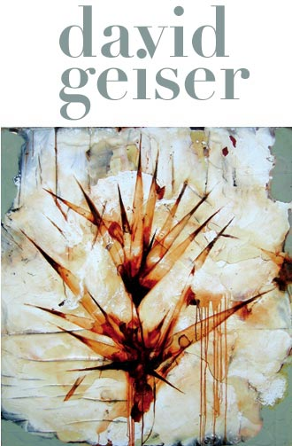
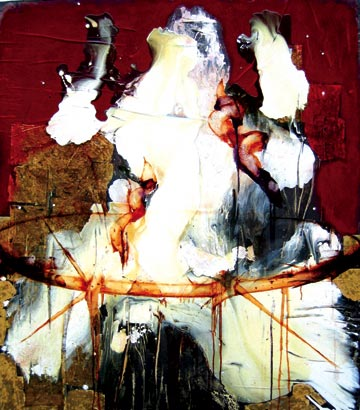

|

Hampton Jitney Magazine: What lead you to this medium of artistic expression?
David Geiser: I grew up in Rochester N.Y. with little access to cultural stimulis.
My first visual revelations came from comics and magazines such as Mad, Panic,
Humbug etc. The satire and fantastic, surreal imagery opened up huge chasms
in my imagination. This lead to deeper exploration of painters such as Bosch,
Goya, Luis-Cuevas and Francis Bacon.
HJM: Who are your influences?
DG: They are legion. From Goya to Bacon, Tapies to Dubuffet, Tribal and Oceanic
artifacts to Outsider Art. I look at them all. I'm drawn to work that attempts
to push material into spirit—work that strums the deep chords of the
collective unconscious.
HJM: What does a day's work look like?
DG: My work requires a lot of material collage and glazing before I even attempt
to conjure image from the piece. I work on board which allows me to get very
physical with the work. I layer material and remove material, pour skeins
of varnish with paint and pigment immersed in it, allowing it to flow, pool,
leach sediment across the surface—much like a river moves and deposits
material. This part of the process is accomplished as I pass to and from the
quotidian activities of the day: dogs, cats, taking our son Jake to and
from school, yard work, etc... The whole carnival of life. The final conjuring
of imagine out of the moraine of material on the boards I'm working on demands
more steady focus and isolation.
HJM: The primal imagery is so prevalent in your work, do the tribal masks
and weapons in your studio solicit invention in your paintings? Or are they
there to elicit memories of travels?
DG: The work that I collect that surround me in my studio and home are tribal
artifacts. Oceanic shields, masks, sculptures and weapons from Africa, Mexico,
South America, puppets from Asia and the work of outsider artists. This work,
these objects move me and inform my work more then the contemporary western
art world. These objects are fashioned with great belief and craft and gain
power from the hands they pass through. I would like my work to convey as
much.

HJM: The explosiveness of your canvases conspire to belie the smooth finishes.
How do you achieve that?
DG: The final patina of my work is the result of layer upon layer of poured
varnish in which paint and pigment are suspended. These layers are built upon
a rough topography of collaged material already fixed to the surface. This
process leaves a glassy surface with light dancing off of and reflected up
from a textured base. The finished product is much like looking deep into
a stream at its bed.
HJM: The Thorn series incontrovertibly pierces the vein of beauty and pain.
Does such dichotomy live in your own psyche?
DG: Beauty and pain could be one issue, but I look to the dialogue between
defensive and vulnerable, aggression and passivity as part of the equation.
The Thorn series comes from the evil weed that made up the Biblical Crown
of Thorns, the Blackthorn.
HJM: Nature is paramount in your art, but it is voiced in an insular working
environment, in your studio. How do you articulate the refraction of light
on canvas?
DG: Nature, isolation, the Hamptons. The play of light on water, deep reflections
from the ocean's bed, dappled gold on a tide pool... a star blanket at night...
the surge of spring the tapestry of fall... the Tribal lands, the great Artists
that passed this way. It's all here, right outside my studio door. The natural
splendor of the Hamptons is an inspirational drug that fuels my fires. The
ability to live and work in this environment makes me feel very fortunate.
HJM: What happens on the flip side of isolation?
DG: Family life with my partner, the brilliantly talented actress Mercedes
Ruehl, our son Jake, our older sons Cameron and Chris, various animals
etc... provides a textured, multi level dialogue of humanity that informs
my work and is the inspirational well spring that I drink from daily.
Hampton Road Gallery
36 Hampton Road Southampton
631 204 9704
July 2 - 19th
|home|
|